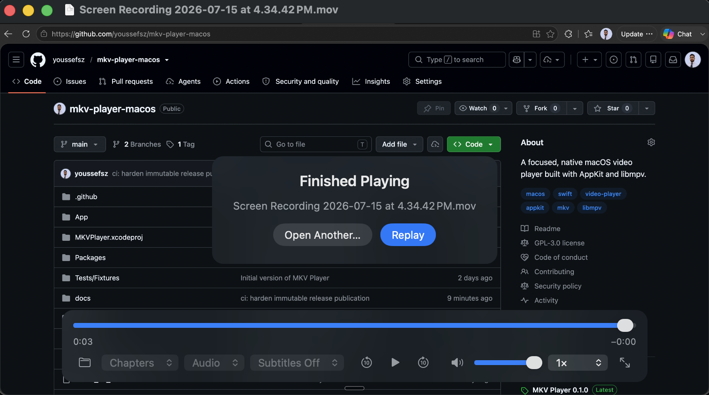

Local video playback,
without the extras.
A native macOS player built with AppKit and libmpv. No account, telemetry, media library, or plug-in system.
Download for macOS
v0.1.1 · macOS 14+

Made for files,
not feeds.
Open a video and watch it. The interface stays out of the way until you need tracks, chapters, subtitles, playback speed, or fullscreen.
- Video
- MKV, MP4, MOV, WebM, AVI, TS, and M2TS
- Playback
- libmpv with VideoToolbox hardware decoding
- Mac
- Apple Silicon and Intel, macOS 14 or later
- Distribution
- Developer ID signed, Apple notarized, and open source
Install
Open the disk image, drag MKV Player into Applications, then open a video with Command-O.
Release notes